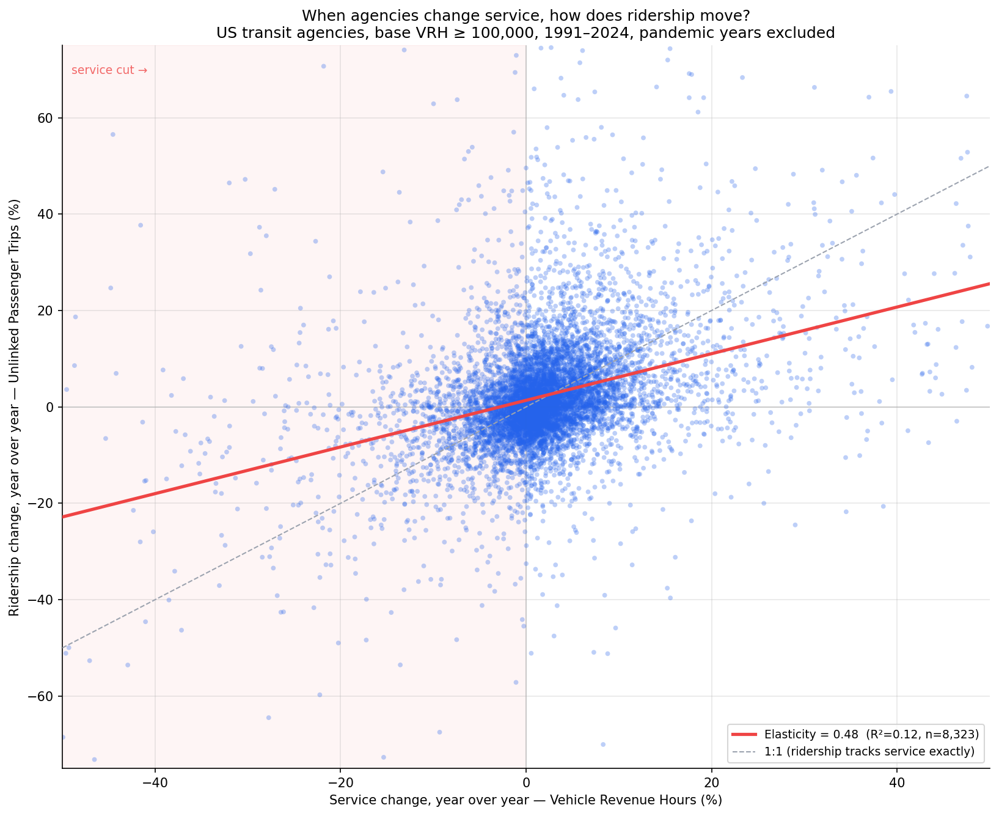
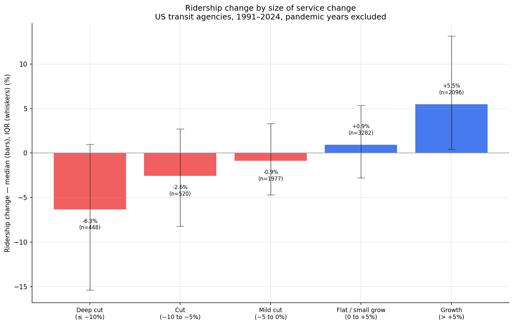
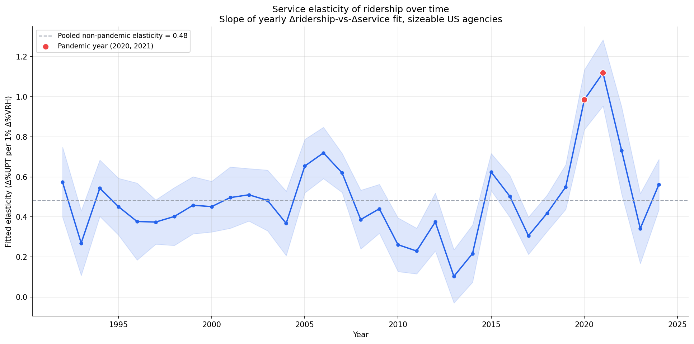
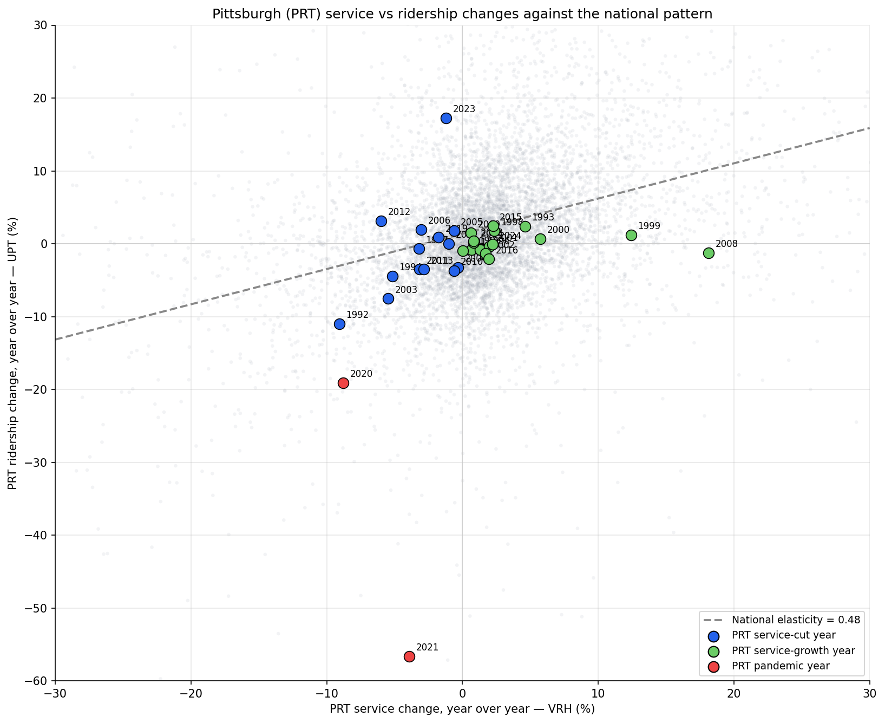

Analysis
59 - National Service Elasticity of Ridership
Coverage: Coverage window unavailable for this page.
Built 2026-06-15 11:52 UTC · Commit e5cf673
Page Navigation
Analysis Navigation
Data Provenance
flowchart LR
59_national_service_elasticity(["59 - National Service Elasticity of Ridership"])
t_ntd_annual_service[("ntd_annual_service")] --> 59_national_service_elasticity
06_ntd_service[["NTD Annual Service ETL"]] --> t_ntd_annual_service
u1_06_ntd_service[/"data/ntd-annual-service/2023_TS2.2_Service_Data.xlsx"/] --> 06_ntd_service
d1_59_national_service_elasticity(("numpy (lib)")) --> 59_national_service_elasticity
d2_59_national_service_elasticity(("polars (lib)")) --> 59_national_service_elasticity
d3_59_national_service_elasticity(("statsmodels (lib)")) --> 59_national_service_elasticity
d4_59_national_service_elasticity(("scipy (lib)")) --> 59_national_service_elasticity
classDef page fill:#dbeafe,stroke:#1d4ed8,color:#1e3a8a,stroke-width:2px;
classDef table fill:#ecfeff,stroke:#0e7490,color:#164e63;
classDef dep fill:#fff7ed,stroke:#c2410c,color:#7c2d12,stroke-dasharray: 4 2;
classDef file fill:#eef2ff,stroke:#6366f1,color:#3730a3;
classDef api fill:#f0fdf4,stroke:#16a34a,color:#14532d;
classDef pipeline fill:#f5f3ff,stroke:#7c3aed,color:#4c1d95;
class 59_national_service_elasticity page;
class t_ntd_annual_service table;
class d1_59_national_service_elasticity,d2_59_national_service_elasticity,d3_59_national_service_elasticity,d4_59_national_service_elasticity dep;
class u1_06_ntd_service file;
class 06_ntd_service pipeline;
Findings
Findings: National Service Elasticity of Ridership
Summary
Across 8,323 year-over-year changes at 497 sizeable US transit agencies (1991–2024, pandemic years set aside), a 1% change in service hours is associated with about a 0.48% change in ridership in the same direction, the same year. Cutting service reliably loses riders — agencies that cut service by 10% or more lost a median of 6.3% of ridership — but ridership moves much less than one-for-one with service, and service changes explain only a small share (R² ≈ 0.12) of year-to-year ridership swings. Most of what drives ridership lies outside the agency's service-level dial. Pittsburgh (PRT) sits squarely on this national pattern.
Key Numbers
- Headline elasticity: 0.48 (95% CI [0.46, 0.52]) — % ridership change per 1% service change, non-pandemic years, sizeable agencies (n = 8,323).
- Cuts only: 0.36 (95% CI [0.30, 0.42], n = 2,945) — among service-cut episodes alone the slope is a bit shallower.
- Sensitivity (base VRH ≥ 250,000): 0.52 — essentially unchanged, so the result is not an artifact of the size threshold.
- R² ≈ 0.12 — service change explains ~12% of the variance in same-year ridership change. Pearson r = 0.35 (p < 1e-200).
- Dose–response gradient (median ridership change): deep cut (≤ −10%) → −6.3%; cut (−10 to −5%) → −2.6%; mild cut (−5 to 0%) → −0.9%; flat (0 to +5%) → +0.9%; growth (> +5%) → +5.5%. Monotonic across all five buckets.
- Pandemic transitions (2020–21): slope ≈ 1.0 — service and ridership co-moved far more tightly, confirming the pandemic was a different regime and correctly excluded.
Observations
- Service cuts cost riders, but less than proportionally. The 0.48 slope means an agency cutting 10% of service hours typically loses about 5% of ridership in the same year. This matches the published short-run transit service elasticity range (~0.3–0.5), which is reassuring for the data.
- The relationship is stable across three decades. The yearly-fit elasticity hovers around 0.3–0.6 from 1992 through 2019 with no trend — the service–ridership link is a structural feature, not a recent phenomenon. Only 2020–2021 break out (slope ≈ 1.0+).
- Service is a minor driver of year-to-year ridership. With R² ≈ 0.12, roughly seven-eighths of the variation in annual ridership change is unrelated to that year's service change — reflecting fuel prices, the economy, fares, demographics, and competing travel modes. Restoring service helps, but it is not the main lever on ridership.
- The dose–response curve is clean and monotonic. Bigger cuts → bigger ridership losses, bigger expansions → bigger gains, with no reversal. This is the clearest single picture of the relationship.
- PRT is a typical agency on this measure. Across its history PRT's service-vs- ridership changes scatter around the national line. Its pre-pandemic cut years (e.g. 1992: −9% VRH / −11% UPT; 2003: −5.5% / −7.5%) track the national slope closely. Its 2022–2023 ridership rebounds (+44%, +17% on roughly flat service) are pandemic- recovery effects, not a service response.
Discussion
The dominant message echoes Analysis 39 from a much larger evidence base: service level is a real but modest lever on ridership. An agency that cuts service will lose riders along a predictable ~0.5 slope, and a deep cut compounds into a feedback risk (less service → longer waits → riders leave → cuts look justified). But the low R² means service restoration alone cannot recover ridership when the larger demand drivers have shifted — which is exactly PRT's post-2019 situation, where ridership fell far more than service. The elasticity quantifies the portion of ridership that is in the agency's hands: cutting 10% of service is worth roughly 5% of riders, no small thing, but the other half of any large ridership swing comes from forces the service budget does not touch.
Caveats
- Association, not causation. Service and ridership are jointly determined. Agencies often cut service because ridership is already falling (reverse causality), and both respond to shared shocks. The 0.48 slope is descriptive co-movement, not a controlled "cut X% → lose Y%" causal estimate. The shallower cuts-only slope (0.36) is consistent with this — cuts are often reactive to demand already softening.
- Ecological / agency-level. Results describe agencies, not individual riders. No inference about why any particular person stopped riding is supported.
- System-level, all modes. VRH and UPT aggregate bus, rail, and demand-response into one figure per agency. Mode-specific elasticities (a rail cut vs a bus cut) cannot be separated here.
- Recovery years remain in the sample. Only 2020 and 2021 are flagged pandemic; 2022–2023 ridership rebounds (large positive intercepts in those years' fits) stay in the analytic set and, if anything, attenuate the slope. Excluding them would raise the estimate slightly, so 0.48 is conservative.
- Contemporaneous only. This measures same-year co-movement; lagged effects (a cut this year shedding riders over several years) are not captured and would tend to make the true multi-year elasticity larger.
- VRH measures scheduled service, not quality. Reliability, frequency, and coverage changes that don't move total VRH are invisible to this metric.
Validation
- Data source verified. VRH and UPT from
ntd_annual_service(NTD TS2.2 workbooks, pipeline 06). Columns confirmed againstdata/DATA_DICTIONARY.md. PRT (ntd_id 30022) annual values spot-checked against the raw table. - Geographic/temporal scope. Both metrics come from the same table, same agency-year grain; changes use strictly consecutive years only (gap years excluded).
- Null/zero handling. Only agency-years with VRH > 0 and UPT > 0 in both endpoints enter a change pair; nulls and zeros are dropped, not treated as observations.
- Aggregates sanity-checked. Headline elasticity (0.48) lands inside the published short-run transit service-elasticity range (~0.3–0.5). PRT's annual VRH/UPT match Analysis 39's figures.
- Direction of effects checked. Slope is positive (cut service → lose riders, grow service → gain riders) — the expected direction. The dose–response gradient is monotonic with no reversal.
- Surprising results investigated. The pandemic subset's near-1.0 slope was investigated and is expected (joint exogenous collapse); it is reported separately, not folded into the headline.
- Small-sample handling. Agencies below 100,000 base VRH are excluded; the per-year elasticity chart further drops years with n < 10. The 250,000-VRH sensitivity fit confirms the estimate is not threshold-driven.
- Ecological framing. All statements are framed as agency-level associations.
Output

Each point is one agency-year; service change (x) vs ridership change (y) with the fitted 0.48 elasticity line and a 1:1 reference. Pandemic years excluded.

Median ridership change (with interquartile range) grouped by size of service change, from deep cuts to growth — a clean monotonic gradient.

The fitted service-to-ridership elasticity estimated separately each year (1991-2024), showing it holds steady near 0.5 except during the pandemic.

Pittsburgh (PRT) year-over-year service and ridership changes plotted against the national pattern, with cut, growth, and pandemic years marked.
No interactive outputs declared.
The per-transition panel — agency, year, prior and current VRH/UPT, and percent changes — used for all fits.
Preview CSV
Per-year fitted elasticity slope, 95% confidence interval, R-squared, and sample size.
Preview CSV
Headline elasticity estimates for the all-years, cuts-only, size-sensitivity, and pandemic subsets.
Preview CSV
Methods
Methods: National Service Elasticity of Ridership
Question
Nationally, across all US transit agencies and the full NTD history (1991–2024), when an agency cuts (or expands) service, how much does its ridership move in the same year? Put differently: what is the agency-level service elasticity of ridership — the percent change in unlinked passenger trips (UPT) associated with a 1% change in vehicle revenue hours (VRH) — and how stable is it over time?
This generalizes Analysis 39, which compared a single 2019→2024 snapshot. Here we use every consecutive-year change across three decades and many cut episodes, not just the COVID window.
Approach
- Build a year-over-year change panel. For each agency, take every pair of
consecutive reporting years where VRH and UPT are both present and positive in
both years. For each pair compute
vrh_pct = ΔVRH/VRH_prev × 100andupt_pct = ΔUPT/UPT_prev × 100. One row per agency-year-transition. - Restrict to sizeable agencies. Keep transitions where the base-year VRH ≥ 100,000 hours (~the largest ~340 agencies in 2019). Tiny rural systems produce wild percent swings on small denominators that would dominate the regression. The threshold is reported and a sensitivity check at 250,000 is run.
- Flag and separate the pandemic. Transitions ending in 2020 or 2021 are
marked
pandemic. The pandemic collapsed service and ridership jointly for exogenous public-health reasons, not as a service→ridership response, so these transitions are excluded from the headline elasticity and reported separately. - Trim reporting discontinuities. Drop transitions with |vrh_pct| > 50% or |upt_pct| > 75% as likely mergers, definition changes, or first-year reporting artifacts rather than genuine service decisions. The count dropped is reported.
- Estimate elasticity (OLS). Regress
upt_pct ~ vrh_pcton the non-pandemic, trimmed panel. The slope is the elasticity; report slope, 95% CI, R², n, and the Pearson correlation. Refit on the cuts-only subset (vrh_pct < 0), since the question is specifically about service reductions. - Elasticity over time. Fit the same slope separately within each year (1991–2024) to check whether the service–ridership relationship is stable, strengthening, or weakening; pandemic years are flagged on the chart.
- Dose–response bins. Bucket transitions by service-change size (deep cut ≤ −10%, cut −10 to −5%, mild cut −5 to 0%, roughly flat 0 to +5%, growth > +5%) and show the distribution (median, IQR) of ridership change in each bucket.
- PRT overlay. Plot PRT's own consecutive-year changes against the national regression line, highlighting its service-cut years.
Framing. This is an agency-level association, not an individual rider behavior model and not a causal demand elasticity. Service and ridership are jointly determined — agencies frequently cut service because ridership is already falling (reverse causality), and both respond to shared shocks (fuel prices, recessions, local economies). The slope describes how service and ridership co-move across agencies and years; it is not a controlled estimate of "cut service by 1% → lose X% of riders."
Data
| Name | Description | Source |
|---|---|---|
ntd_annual_service |
Annual system-level VRH, UPT per agency (1991–2024) | prt.db table (pipeline 06, NTD TS2.2 workbooks) |
Columns used: ntd_id, agency_name, year, vrh, upt. System-level
(all modes aggregated). Inclusion: VRH & UPT present and > 0 in both years of a
transition; base-year VRH ≥ 100,000.
Output
output/service_vs_ridership_scatter.png— Δ%VRH vs Δ%UPT for all non-pandemic sizeable transitions, with the fitted elasticity line, y=x reference, and the service-cut region shaded.output/dose_response_bins.png— distribution of ridership change within each service-change bucket (median, IQR, n per bin).output/elasticity_over_time.png— per-year fitted elasticity slope (1991–2024) with 95% CI band; pandemic years flagged.output/prt_cut_episodes.png— PRT's consecutive-year service vs ridership changes over its history, cut years highlighted, against the national line.output/agency_year_changes.csv— the per-transition change panel used.output/elasticity_by_year.csv— per-year slope, CI, n, R².output/summary.csv— headline elasticity estimates (all, cuts-only, sensitivity, pandemic-subset).
Source Code
|
Sources
| Name | Type | Why It Matters | Owner | Freshness | Caveat |
|---|---|---|---|---|---|
| ntd_annual_service | table | Primary analytical table used in this page's computations. | Produced by NTD Annual Service ETL. | Updated when the producing pipeline step is rerun. | Coverage depends on upstream source availability and ETL assumptions. |
Upstream sources (1)
|
|||||
| numpy | dependency | Runtime dependency required for this page's pipeline or analysis code. | Open-source Python ecosystem maintainers. | Version pinned by project environment until dependency updates are applied. | Library updates may change behavior or defaults. |
| polars | dependency | Runtime dependency required for this page's pipeline or analysis code. | Open-source Python ecosystem maintainers. | Version pinned by project environment until dependency updates are applied. | Library updates may change behavior or defaults. |
| statsmodels | dependency | Runtime dependency required for this page's pipeline or analysis code. | Open-source Python ecosystem maintainers. | Version pinned by project environment until dependency updates are applied. | Library updates may change behavior or defaults. |
| scipy | dependency | Runtime dependency required for this page's pipeline or analysis code. | Open-source Python ecosystem maintainers. | Version pinned by project environment until dependency updates are applied. | Library updates may change behavior or defaults. |